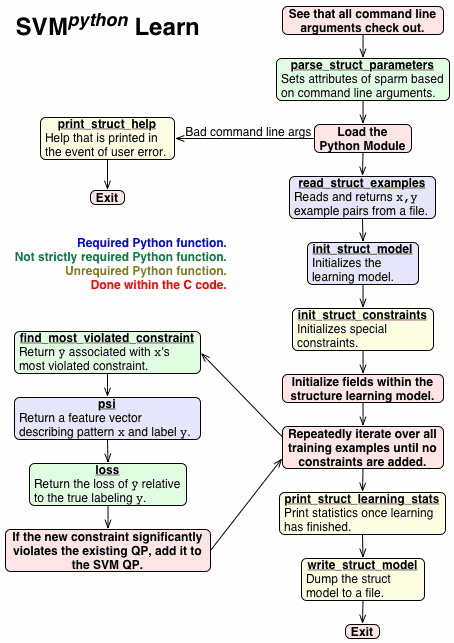

Put simply, SVMpython is SVMstruct, except that all of the C API functions that the user normally has to implement (except those dealing with C specific problems, most notably memory management) instead call a function of the same name in a Python module. You can write an SVMstruct instance in Python without having to author any C code. SVMpython tries to stay close to SVMstruct in naming conventions and other behavior, but knowledge of SVMstruct's original C implementation is not required.
This document contains a general overview in the first few sections as well as a more detailed reference in later sections for SVMpython. If you're already familiar with SVMstruct and Python, it's possible to get a pretty good idea of how to use the package merely by browsing through svmstruct.py and multiclass.py. This document provides a more in depth view of how to use the package.
Note that this is not a conversion of SVMstruct to Python. It is merely an embedding of Python in existing C code. All code other than the user implemented API functions is still in C, including optimization.
SVMlight is the basic underlying SVM learner, SVMstruct a general framework to learn complex output spaces built upon SVMlight for which one would write instantiations to learn in a particular setting, and SVMpython extends SVMstruct to allow such instantiations to be written in Python instead of in C. In SVMstruct, the user implement various functions in the svm_struct_api.c file, which the underlying SVMstruct code calls in order to learn a task. The intention of SVMstruct is that the underlying code is constant, and all that a user needs to change is within svm_struct_api.c and svm_struct_api_type.h. SVMpython works the same way, except all the functions that are to be implemented are instead implemented in a Python module (a .py file), and all these functions in svm_struct_api.c are instead glue code to call their embedded Python equivalents from the module, and all the types in svm_struct_api_type.h contain Python objects. The intention of SVMpython is that is that the C code stays constant and the user writes new and modifies Python modules to implement specific tasks.
The primary advantages are that Python tends to be easier and faster to code than C, less resistant to change and code reorganization, tends to be many times more compact, there's no explicit memory management, and Python's object oriented-ness means that some tedious tasks in SVMstruct can be easily replaced with default built in behavior.
My favorite example of this last point is that, since Python objects can be assigned any attribute, and since many Python objects are easily serializable with the pickle module, adding a field to the struct-model in Python code consists of a simple assignment like sm.foo = 5 at some point, and that's it. If one were to use C code in SVMstruct, one would add a field to the relevant struct, add an assignment, add code to write it to a model file, add code to parse it from a model file, and then test it to make sure all these little changes work well with each other.
The primary disadvantage to using SVMpython is that it is slower than equivalent C code. For example, considering the time outside of SVM optimization, the Python implementation of multiclass classification takes 9 times the time as SVMmulticlass. However, on this task SVM optimization takes about 99.5% of the time anyway, so the increase is often negligible.
make should do it, unless the Python library you want to use is not the library corresponding to the Python interpreter you get when you just type python.
You might want to modify the Makefile to modify the PYTHON variable to the path of the desired interpreter. When you install Python, you install a library and an interpreter. This interpreter is able to output where its corresponding library is stored. The Makefile calls the Python interpreter to get this information, as well as other important information relevant to building a C application with embedded Python. You can specify the path of your desired interpreter by setting PYTHON to something other than python.
When you build, the program will produce two executables, svm_python_learn for learning a model and svm_python_classify for classification with a learned model.
I have tried building SVMpython with both Python 2.3 and 2.4 on OS X and Linux. Obviously, if the Python module you want to use usess features specific to Python 2.4 (like generator expressions or the long overdue sorted) you wouldn't be able to use the module with an SVMpython built against the Python 2.3 library.
Using
One annoying detail of embedded Python is that your PYTHONPATH environment variable has to contain "." so the executable knows where to look for the module to load.
The file svmstruct.py is a Python module, and also contains documentation on all the functions which the C code may attempt to call. This is a good place to start reading if you are already familiar with SVMstruct and want to get familiar with how to build a SVMpython Python module. This describes what each function should do and, for non-required functions, describes the default behavior that happens if you don't implement them. The multiclass.py file is an example implementation of multiclass classification in Python.
Once you've written a Python module in the file foo.py based on svmstruct.py and you want to use SVMpython with this module, you would use the following command line commands to learn a model and classify with a model respectively.
./svm_python_learn --m foo [options] <train> <model>
./svm_python_classify --m foo [options] <test> <model> <output>Note that SVMpython accepts the same arguments as SVMstruct plus this extra --m option. If the --m option is omitted it is equivalent to including the command line arguments --m svmstruct. Note that though we put this command line option first, the --m option may occur anywhere in the option list.
Overview of

svm_python_learn
Pictured is a diagram illustrating the flow of execution within svm_python_learn. This diagram also describes the SVMstruct learning program pretty well, excepting the stuff particular to loading the Python module, and how structure parameters are always parsed to enable the program to load the Python module, and how everything is in C and all functions are required.
The red boxes indicate things that are done wihin the underlying C code. The other boxes indicate functions to be implemented in the Python module. The blue boxes indicate functions that absolutely must be implemented or the program won't be able to execute. The green boxes indicate functions that are not required, strictly speaking, because they have some default behavior. The yellow boxes indicate functions that in the vast majority of cases are probably unnecessary to implement since the default behavior is probably acceptable.
The svm_python_learn program first checks whether the command line arguments are structured completely correctly. Whether they are or are not, it checks if a --m module is loaded and loads the Python module. If the arguments were not structured correctly, the Python module's help function is called to print out information to standard output, at which point the program exits. If, on the other hand, the arguments check out, the pattern-label example pairs are read from the indicated example file, some parameters for the learning model are set, some preliminary constraints are initialized, the learning model's structures are defined, and then the learning process begins.
This learning process repeatedly iterates over all training examples. For each example, the label associated with the most violated constraint for the pattern is found, the feature vector Ψ describing the relationship between the pattern and the label is computed, and the loss Δ is computed. From the Ψ and Δ, the program determines if the most violated constraint is violated enough to justify adding it to the model. If it is, then the constraint is added, and the program moves on to the next example. In the event that no constraints were added in an iteration, the algorithm either lowers its tolerance or, if minimum tolerance has been reached, ends the learning process.
Once learning has finished, statistics related to learning may be printed out, the model is written to a file, and the program exits.
svm_python_classifyPictured is a diagram illustrating the flow of execution within svm_python_classify. The color coding of the boxes is the same as that in the high level description of the learning program.
The svm_python_classify program first checks whether the command line arguments are fine, and if they are not it exits. Otherwise, the indicated Python module is loaded. Then, the learned model is read and the testing pattern-label example pairs are loaded from the indicated example file. Then, it iterates over all the testing examples, classifies each example, writes the label to a file, finding the loss of this example, and then may evaluate the prediction and accumulate statistics. Once each example is processed, some summary statistics are printed out and the program exits.
The functions a user writes for the Python module will accept some objects as arguments, and return other objects. These objects correspond more or less like structures in C code: their intended use is that they only contain data. Though knowledge of SVMstruct's peculiarities is not strictly required to know how to use SVMpython, attention was given to make SVMpython resemble SVMstruct to as great a degree as seemed sensible, including the names of functions and how different types of objects are structured.
In this section we go over the types of these objects that a user needs to be aware of in order to interface successfully with SVMpython. Note that if you change a value in the Python object this does not copy over to the corresponding C structure, except in the case where you initialize size_psi, and during classification where you read the model and synchronize the Python object to the C structures. This disparity between the two may change in future releases if the performance hit for copying everything over becomes too offensive.
Many of the module functions get the structure model as input. In the documentation, the structure model argument is called sm in a functions argument list. This type of corresponds to the C data type STRUCTMODEL that is passed into many functions. In nearly every case, the only necessary attributes to know about are the red ones, but we describe the others as well.
The red attributes correspond to those that appear within a STRUCTMODEL C structure. If we are learning or classification with a linear kernel, w is the linear weight vector of length size_psi+1, indexed from 1 through size_psi inclusive. size_psi contains the maximum feature index for out examples, which in the linear case is also equal to the number of weights we are learning.
The green attributes correspond to those that appear within a STRUCTMODEL C structure's svm_model field. sv_num holds the number of support vectors plus one. supvec is a sequence of document objects (described later) that encode every document, while alpha is the multiplier associated with each support vector, where entry alpha[i] corresponds to entry supvec[i-1]. The b parameter is the linear weight you get if you use the svmlight.classify_example function. I am less familiar with the role some of the rest of these play with SVMpython's learning model as many of them never seem to be set to anything but a default value, but they are copied to the structure model anyway.
The blue attributes correspond to those that appear within a STRUCTMODEL C structure's svm_model.kernel_parm field, holding attributes relating to the kernel. The kernel_type parameter is an integer holding the type of kernel, either linear (0), polynomial (1), RBF (2), sigmoid (3), or user defined (4). For the polynomial kernel, coef_lin and coef_const hold the coefficient for the inner product of the two vectors and the constant term, while poly_degree holds the polynomial degree to which the sum of the inner product and constant coefficent is taken. For the RBF kernel, rbf_gamma holds the gamma parameter. The custom parameter is a string holding information that may be of use for a user defined kernel.
Finally, the cobj object is an object that holds the C STRUCTMODEL structure corresponding to the Python structure model object. This is of no use within Python, and is used in the event that you call some function of the svmlight package that requires a structure model.
Note that, while learning, anything you store in the structure model will eventually be written out to the model so it can be restored to the classifier, excepting entries that are deleted or overwritten. So, if you want to pass any information from the learner to the classifier, store it in the structure model. For example, if you at some point set sm.foo = 10 while learning, then during classification sm.foo will evaluate to the integer 10.
The Python code never needs to create structure model objects.

Many of the module functions for learning get a structure learning parameter object, identified as sparm in a function's argument list, which holds many attributes related to structured learning.
Some attributes control how the program optimizes. Recall that the learning process adds a constraint if the constraint is sufficiently violated; The epsilon attribute controls how much a constraint can be violated before it is added to the model. In the learning process, constriants are added, but the quadratic program is not reoptimized after every constraint is added, but may wait till as many as newconstretrain constraints are added before it reoptimizes.
For attributes relating directly to the quadratic program, the C attribute is the usual SVM regularization parameter that controls the tradeoff between low slack (high C) and a simple model (low C). The slack_norm is 1 or 2 depending on what norm is used on the slack vector in the quadratic program. The loss_type is an integer indicating whether loss is introduced into constraints by multiplying by the slack term (loss_type=1) or by dividing by the margin term (loss_type=2).
Other attributes are more for the benefit of the user code, including loss_function, an integer indicating which loss function to use. The custom_argv and custom_argd attributes hold the custom command line arguments. In SVMpython, as in SVMstruct, custom command line argument flags are prefixed with two dashes, while the universal command line argument flags are prefixed with one dash. The custom_argv holds the list of all the custom arguments, while custom_argd is a dictionary holding a mapping of each "--key" argument to the "value" argument following it. For example, if the command line arguments "--foo bar --biz bam" are processed, custom_argv would hold the Python sequence ['--foo', 'bar', '--biz', 'bam'], while custom_argd would hold the Python dictionary {'foo':'bar', 'biz':'bam'}.
The Python code never needs to create structure learning parameter objects.
In SVMlight and SVMstruct, the basic feature vector is represented as an array of WORD objects, each of which encodes the feature index number (an integer counting from 1 and higher), and the feature value for this index (a floating point number for the value of the feature). In the Python code of SVMpython, a structure corresponding to these word arrays is a sequence of tuples. Each tuple has two elements, where the first is the index of the feature, and the second is the value of the feature as described earlier. So, a sequence [(1,2.3), (5,-6.1), (8,0.5)] has features 1, 5, and 8 with values 2.3, -6.1, and 0.5 respectively; all other features implicitly have value 0. Note that, as in SVMlight, word arrays start counting feature indices from 1, and the features must be listed in increasing feature index order, so if a tuple (a,b) occurs before a tuple (c,d), it must be that a < c.
A support vector structure corresponds to the SVECTOR C structure, which holds information relevant to a support vector, but it is used more generally simply as a feature vector. The words attribute holds a word sequence as described earlier to encode the feature values. The userdefined attribute holds a string presumably relevant to user defined kernels, but in most cases it is the empty string. The kernel_id is an attribute relevant to kernels, as only vectors with the same kernel_id have their kernel product taken. The factor attribute is the coefficient for the term in the sum of kernel function evaluations.
The SVECTOR C structure also holds a next field, allowing for linked list of kernel functions. To get this functionality in the Python code, whenever a support vector object is expected or asked for, you can instead pass in or return a sequence of support vector objects, and all the structures that say that an attribute holds a support vector instead has an attribute that holds a sequence of support vectors.
You can create support vector objects through the use of the svmlight.create_svector function. Support vectors are useful for svmlight.classify_example function, returned from the psi user function, and contained within document objects, described below.
A document vector structure corresponds to the DOC C structure, which holds information relevant to a document example in SVMlight, but within SVMstruct and SVMpython is used for encoding constraints. The fvec attribute holds sequence of support vector objects. The costfactor attribute indicates how important it is not to misclassify this example; I'm unclear on the importance of this attribute to SVMstruct.
slackid attribute indicates which slack ID is associated with this constraint; if two constraints have the same slack ID, then they share the same slack variable. Finally, SVMstruct appears to use docnum as the position of the constraint in the constraint set.
You can create support vector objects through the use of the svmlight.create_doc function. Examples of uses of document objects include the return list from the init_struct_constraints user function to encode initial constraints, the sm.supvec list consists of document objects, and the print_struct_learning_stats has an argument for a list of constraints encoded as document objects.
In SVMstruct's C API, patterns and labels must be declared as structures. In SVMpython, because patterns and labels only interact with the code in the Python module, the underlying code does not need to know anything about these, so these may be any Python objects. Their types do not have to be explicitly created, and they do not have to have any particular attributes beyond what is used by the user created Python module.
In this part, detailed descriptions of each of the user functions is listed. The expectation that SVMpython has of each function is
classify_struct_example(x, sm, sparm)eval_prediction(exnum, x, y, ypred, sm, sparm, teststats)
Allows accumulated statistics regarding how well the predicted label ypred for pattern x matches the true label y. The first time this function is called teststats is None. This function's return value will be passed along to the next call to eval_prediction. After all test predictions are made, the last value returned will be passed along to print_testing_stats.
If this function is not implemented, the default behavior is equivalent to initialize teststats as an empty list on the first example, and thence for each prediction appending the loss between y and ypred to teststats, and returning teststats.
find_most_violated_constraint(x, y, sm, sparm)
Returns the label ybar for pattern x corresponding to the most violated constraint according to SVMstruct cost function. To find which cost function you should use, check sparm.loss_type for whether this is slack or margin rescaling (1 or 2 respectively), and check sparm.slack_norm for whether the slack vector is in an L1-norm or L2-norm in the QP (1 or 2 respectively). If there's no incorrect label, then return None.
If this function is not implemented, this function is equivalent to classify(x, sm, sparm). The guarantees of optimality of Tsochantaridis et al. no longer hold since this doesn't take the loss into account at all, but it isn't always a terrible approximation, and indeed impiracally speaking on many clustering problems I have looked at it doesn't yield a statistically significant difference in performance on a test set.
init_struct_constraints(sample, sm, sparm)
Note that the docnum attribute of each document returned by the user is ignored. These have to have particular values anyway. Also, regarding the slackid of each document, the slack IDs 0 through len(sample)-1 inclusive are reserved for each training example in the sample. Note that if you leave the slackid of a document as None, which is the default for svmlight.create_doc, that the document encoded as a constraint will get slackid=len(sample)+i, where i is the position of the constraint within the returned list.
If this function is not implemented, it is equivalent to returning an empty list, i.e., no constraints.
init_struct_model(sample, sm, sparm)
Initialize the structure model sm. The major intention is that we set sm.size_psi to the maximum feature index we return from psi. The ancillary purpose is to add any information to sm that is necessary from the user code perspective. This function returns nothing.
loss(y, ybar, sparm)
Returns the loss for the correct label y and the predicted label ybar. In the event that y and ybar are identical loss must be 0. Presumably as y and ybar grow more and more dissimilar the returned value will increase from that point. sparm.loss_function holds the loss function option specified on the command line via the -l option.
If this function is not implemented, the default behavior is to perform 0/1 loss based on the truth of y==ybar.
parse_struct_parameters(sparm)
This gives the user code a chance to change sparm based on the custom command line arguments. The command line arguments are stored in sparm.argv as a list of strings. The command line arguments have also been preliminarily processed as sparm.argd as a dictionary. For example, if the custom command line arguments were --key1 value1 --key2 value2 then sparm.argd would equal {'key1':'value1', 'key2':'value2'}. This function returns nothing. It is called only during learning, not classification.
If this function is not implemented, any custom command line arguments (aside from --m, of course) are ignored and sparm remains unchanged.
print_struct_help()
If this function is not implemented, the program prints the default SVMstruct help string as well as a note about the use of the --m option to load a Python module.
print_struct_learning_stats(sample, sm, cset, alpha, sparm)This is called after training primarily to compute and print any statistics regarding the learning (e.g., training error) of the model on the training sample. You may also use it to make final changes to sm before it is written out to a file. For example, if you defined any non-pickle-able attributes in sm, this is a good time to turn them into a pickle-able object before it is written out. Also passed in is the set of constraints cset as a sequence of (left-hand-side, right-hand-side) two-element tuples, and an alpha of the same length holding the Lagrange multipliers for each constraint.
If this function is not implemented, the default behavior is equivalent to print [loss(e[1], classify(e.[0], sm, sparm)) for e in sample].
print_struct_testing_stats(sample, sm, sparm, teststats)This is called after all test predictions are made to allow the display of any summary statistics that have been accumulated in the teststats object through use of the eval_prediction function.
If this function is not implemented, the default behavior is equivalent to print teststats.
psi(x, y, sm, sparm)
This returns a sequence representing the feature vector describing the relationship between a pattern x and label y. What psi returns depends on the problem. Its particulars are described in the Tsochantaridis paper. The return value should be either a support vector object of the type returned by svmlight.create_svector, or a list of support vector objects.
read_struct_examples(filename, sparm)This reads the examples contained at the file at path filename and returns them as a sequence. Each element of the sequence should be an object e where e[0] and e[1] is the pattern x and label y respectively. Specifically, the intention is that the element be a two-element tuple containing an x-y pair.
read_struct_model(filename, sparm)Return the structmodel stored in the file at path filename, or None if the file could not be read for some reason.
If this function is not implemented, the default behavior is equivalent to return pickle.load(file(filename)).
write_label(fileptr, y)Called during classification, the idea is to write a string representation of y to the file fileptr. Note that unlike other functions, fileptr an actual open file, not a filename. It is not to be closed by this function. Any attempt to close it is ignored.
If this function is not implemented, the default behavior is equivalent to fileptr.write(repr(y)+'\n').
write_struct_model(filename, sm, sparm)Write the structmodel sm to a file at path filename.
If this function is not implemented, the default behavior is equivalent to pickle.dump(sm, file(filename,'w')).
svmlight Extension Modulesvmlight module that the Python instantiation modules can import and use to get access to the following sometimes useful functions.
classify_example(sm, sv)
Given a feature vector sv, classify it according to the kernel and learned support vectors in the structure model sm. This is equivalent to the C function classify_example(sm.svm_model, doc), where doc.fvec holds the vector contained as sv.
create_doc(sv, [costfactor=1.0, [slackid=None, [docnum=None]]])
This is the rough analogy to the C function create_example, except since the function arguments have been rearranged considerably it has been renamed to avoid confusion. All arguments except the first one are optional. The first argument specifies what the document's fvec attribute will hold, and should be a support vector object. The rest of the arguments are named according to the attributes they set in the document.
create_svector(words, [userdefined='', [factor=1.0, [kernel_id=0]]])Given a feature list of words words, create a Python support vector object. (Note that, unlike other places, this is actually a support vector object and not a list of support vector objects.) All arguments except the first one are optional.
kernel(kp, sv1, sv2)
The kernel function K is defined by kp, which may have attributes corresponding to the kernel attributes defined for structure models. The associated default values are provided in case the object passed in does not have these attributes: kp.kernel_type=0, kp.poly_degree=3, kp.rbf_gamma=1.0, kp.coef_lin=1.0, kp.coef_const=1.0, kp.custom='empty'. Note that since a structure model contains these attributes, you can just pass in the structure model to use the kernel function for the model. The float value for the evaluation of the kernel on the two feature vectors sv1 and sv2 is returned.
index_from_one = TrueFalse, then all these values are instead indexed from 0, which may be a more natural setting for some applications.multiclassmulticlass.py. This code run under SVMpython is more or less equivalent to SVMmulticlass.
"""A module for SVM^python for multiclass learning."""
# The svmlight package lets us use some useful portions of the C code.
import svmlight
# These parameters are set to their default values so this declaration
# is technically unnecessary.
svmpython_parameters = {"index_from_one":True}
def read_struct_examples(filename, sparm):
# This reads example files of the type read by SVM^multiclass.
examples = []
sparm.num_features = sparm.num_classes = 0
# Open the file and read each example.
for line in file(filename):
# Get rid of comments.
if line.find("#"): line = line[:line.find("#")]
tokens = line.split()
# If the line is empty, who cares?
if not tokens: continue
# Get the target.
target = int(tokens[0])
sparm.num_classes = max(target, sparm.num_classes)
# Get the features.
tokens = [tuple(t.split(":")) for t in tokens[1:]]
features = [(int(k),float(v)) for k,v in tokens]
if features:
sparm.num_features = max(features[-1][0], sparm.num_features)
# Add the example to the list
examples.append((features, target))
# Print out some very useful statistics.
print len(examples),"examples read with",sparm.num_features,
print "features and",sparm.num_classes,"classes"
return examples
def loss(y, ybar, sparm):
# We use zero-one loss.
if y==ybar: return 0
return 1
def init_struct_model(sample, sm, sparm):
# In the corresponding C code, the counting of features and
# classes was done in the model initialization, not here.
sm.size_psi = sparm.num_features * sparm.num_classes
print "size_psi set to",sm.size_psi
def classify_struct_example(x, sm, sparm):
# I am a very bad man. There is no class 0, of course.
return find_most_violated_constraint(x, 0, sm, sparm)
def find_most_violated_constraint(x, y, sm, sparm):
# Get all the wrong classes.
classes = [c+1 for c in range(sparm.num_classes) if c+1 is not y]
# Get the psi vectors for each example in each class.
vectors = [(psi(x,c,sm,sparm),c) for c in classes]
# Get the predictions for each psi vector.
predictions = [(svmlight.classify_example(sm, p),c) for p,c in vectors]
# Return the class associated with the maximum prediction!
return max(predictions)[1]
def psi(x, y, sm, sparm):
# Just increment the feature index to the appropriate stack position.
return svmlight.create_svector([(f+(y-1)*sparm.num_features,v)
for f,v in x])
# The default action of printing out all the losses or labels is
# irritating for the 300 training examples and 2200 testing examples
# in the sample task.
def print_struct_learning_stats(sample, sm, cset, alpha, sparm):
predictions = [classify_struct_example(x,sm,sparm) for x,y in sample]
losses = [loss(y,ybar,sparm) for (x,y),ybar in zip(sample,predictions)]
print "Average loss:",float(sum(losses))/len(losses)
def print_struct_testing_stats(sample, sm, sparm, teststats): pass